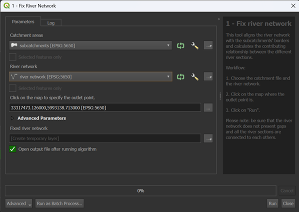

Flow Estimation
The Flow Estimation provides an estimation of yearly mean flow and yearly mean low fow for each subcatchment or river section within a specified catchment area. This estimation is made by Random Forest (source), which uses the catchment’s geographical characteristics as predictors and water flow data collected from gauging stations to calibrate and validate the approach.
This group of tools is divided in 4 different processes:
Fix River Network
Contributing Area
Calculate Geofactors
Flow Estimation
insert plugin scheme
Fix River Network
Understanding the flow direction (where the water is going and which other river section it contributes to) is a critical aspect of the river network. This information is very important for calculating the flow of each river section and determining accumulated values. Also, in many cases the intersection between the river network and the subcatchments is not perfectly aligned. This misalignment can cause issue in later steps of the plugin, so better fix the input beforehand!
This algorithm was developed from the plugin WaterNetAnalyzer by Jannik Schilling (source).
NET_ID and NET_TO are very important because they explain the relationship of the river network.
It can happen that there is a misalignment between the river sections and the subcatchments. Here we fix it. We fix it because otherwise the model struggle to understand where the water is flowing and it can cause errors or over/under estimation during the flow model.
insert picture of river and subcatchments misalignment
If the misalignment is greater than 10 cm, the plugin will not fix it and it is necessary to manually adjust the input file. Check the Troubleshooting section for more information about it.
Input data
Two input data are necessary for this tool:
subcatchments.shp
river_network.shp
The subcatchments.shp is a polygon shapefile that describes the division of the catchment in water basins. The river_network.shp is a line shapefile that represents the river network within the catchment. It is important that all the sections are connected to each others without gaps. It is also required a precise alignment between the river network and the subcatchments (like already explained above). For this tool, their attributes are not important, more important is their geometry.
figure with example of input data
Workflow
Add all the input data to the project by clicking on “Layer –> Add Layer –> Add Vector Layer”
Go in the Processing Toolbox and look for the APRIORA plugin. Click on Flow estimation and open 1 - Fix River Network
Choose subcatchments.shp as input for Catchment areas
Choose river_network.shp as input for River network
Click on the three dots and click on the outlet point of the river network. The selected point does not have to be exactly on the outlet, just approximately there.
Click on Run
insert video tutorial
Output data:
fixed_river_network.shp
Two new columns have been added to the attribute table: NET_ID and NET_TO. These columns represent respectively the river network ID of each specific section and the river network ID of the downstream river section. Before we continue, it is important to check if the new colums are populated correctly for all river sections. If any value under NET_TO is marked as unconnected, it might be due to the fact that the river sections are not connected with each others. Check the geometry of the unconnected river sections, manually adjust them and re-run the tool until there are no unconnected values in the NET_TO column. Important: apply the changes to the original file river_network.shp and not to fixed_river_network.shp.
Contributing Area of Gauging Station
Every gauging station measures the flow of a river. However, to understand the flow dynamics, we need to determine the area contributing to each gauging station. This tool allows us to calculate the area upstream each gauging station, which we will use in a later step of the plugin. In case we have more than one gauging station within the catchment, the tool will generate a single output file where the contributing areas overlap.
Input data
subcatchments.shp
fixed_river_network.shp (from Fix River Network)
gauging_stations.shp
The first two input data were already discussed previously, so let’s talk about the gauging_stations.shp. It is a point shapefile representing the gauging stations within the catchment. Beside the basic information (like ID, coordinates, etc.), it should contain two columns related to Mean Flow and Mean Low Flow calculated at the gauging station. The two average values should be calculated over a certain time series (e.g., 1991 - 2020). In Table 1, you can see an example of the gauging_stations.shp.
gml_id |
Name |
Mean Flow |
Mean Low Flow |
|---|---|---|---|
ID_1974292 |
Rostock-Geinitzbrücke |
18,13 |
4,39 |
ID_1974292 |
Rostock-Geinitzbrücke |
18,13 |
4,39 |
ID_1974292 |
Rostock-Geinitzbrücke |
18,13 |
4,39 |
ID_1974292 |
Rostock-Geinitzbrücke |
18,13 |
4,39 |
ID_1974292 |
Rostock-Geinitzbrücke |
18,13 |
4,39 |
Workflow
Add all the input data to the project by clicking on “Layer –> Add Layer –> Add Vector Layer”
Go in the Processing Toolbox and look for the APRIORA plugin. Click on Flow estimation and open 2 - Contributing Area of Gauging Station
Choose subcatchments.shp as input for Catchment areas
Choose fixed_river_network.shp as input for River network
Choose gauging_stations.shp as input for Gauging stations
Select the Mean Flow field and Mean Low Flow field from gauging_stations.shp
Click on Run
insert video tutorial
Output data:
gauged_subcatchments.shp
ungauged_subcatchments.shp
Open the attribute table of gauged_subcatchments.shp and check its features. Each feature represents the contributing area for a gauging station. If there is more than one gauging station, you will notice that the contributing areas are overlapping. If you want to highlight a specific feature, right-click on it and select Flash Feature. Important to notice: there are two extra fields called Mean_Flow and M_L_Flow that come directly from gauging_stations.shp.
Now, open the attribute table of ungauged_subcatchments.shp. You will find a new column called id_catch. This field assigns a unique code to each subcatchment and river section, making it easier to link subcatchments with their corresponding river section in later steps.
Calculate Geofactors
The flow estimation model uses a machine learning approach to estimate the water flow. The main core of this ML-based regionalization is to establish a predictive relationship between model parameters and subcatchment geofactors. This relationship is used to predict the morel parameters of ungauged subcatchments and estimate their water flow. The geofactors are physical and hydrological chatacteristics of subcatchments, such as area, slope or land use, that influence water flow. In this tool we use certain input data to calculate the geofactors related to each subcatchment.
Input data
gauged_subcatchments.shp (from Contributing Area of Gauging Station)
ungauged_subcatchments.shp (from Contributing Area of Gauging Station)
fixed_river_network.shp (from Fix River Network)
DEM.tif
water_area.shp
forest_area.shp
settlement_area.shp
precipitation data
The first three input data were already discussed previously. DEM.tif, is a digital elevation model raster file. water_area.shp, forest_area.shp and settlement_area.shp are polygon shapefile representing respectively water bodies (lakes), forest and settlement area. Last is precipitation data that can be stored as several .nc files in a folder or as a unique raster file. The precipitation data should cover a time series equal to the time series selected for the flow at the gauging stations.
insert a table of where we can find the data
Workflow
Flow Estimation
This is the last part of the model where we estimate the flow.
Random Forest Regressor
This is the model used for estimating the flow.